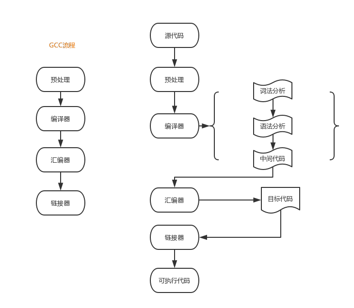

编译过程基础
我们看看 C 的编译过程，我整理了一个流程图如下：

预处理：
预处理器是程序中处理输入数据，产生能用来输入到其他程序的数据的程序。
一些预处理器只能够执行相对简单的文本替换和宏展开（比如C预处理器处理 #include 等指示），而另一些则有着完全成熟的编程语言的能力。
讲道理预处理的过程应该在词法解析之前比较合适，但是实际中（比如 GCC）中是一边进行词法解析一边进行预处理的。
词法分析：
编译器中执行的过程大致包含词法分析、语法分析、中间代码的生成（这个不一定有）等。
词法分析是计算机科学中将字符序列转换为标记（token）序列的过程。一般是以一个函数的形式存在供语法分析器调用。
意思就是编译器并不能直接看出你的代码如int a = strlen("hello world!"); 是什么意思。
它只能通过状态机的方式实现一个词法分析器，然后挨个字符去读，然后根据字符的特性切换状态，比如 读到'int'，就切换状态的到 Identifier（我瞎掰的一个状态，后面也是，这个看代码怎么定义了），读到 '\n' 就切换到 Normal 状态等。（这里有一个 Java 实现词法解析器的例子，可以加深认识）。
还有维基百科上的一个例子：
sum=3+2;
上面的一行代码（注意没有空格）标记化（tokenization）之后可能是这样：
| 语素 | 标记类型 |
|---|---|
| sum | 标识符 |
| = | 赋值操作符 |
| 3 | 数字 |
| + | 加法操作符 |
| 2 | 数字 |
| ; | 语句结束 |
这一过程其实非常的复杂，比如int a和int a()肯定是不一样的标记，所以自己实现起来虽然感觉上是一个循环里面包一个 switch ... case ...然后 各种正则判断，给一个状态，实际上灰常的麻烦啊！
语法分析：
经过词法分析 tokenization 之后我们得到了一些单词及其标记，但是组合起来的语法还是不清楚，这个时候就需要通过语法分析器来处理了。
可以猜想其可以采用模板匹配的方式进行简单处理：
比如 int a = 10; 的模式，可以匹配一种模板 类型 变量名 = 值
但是在如 C 这样的语言中各种语法规则，都需要完美匹配，太难了。有兴趣的可以去深挖一下如 C 语言编译器中的语法解析是如何处理的。
最终语法分析的目的是将词法分析的结果转成 AST（抽象语法树）
在计算机科学中，抽象语法树（Abstract Syntax Tree，AST），或简称语法树（Syntax tree），是源代码语法结构的一种抽象表示。它以树状的形式表现编程语言的语法结构，树上的每个节点都表示源代码中的一种结构。之所以说语法是“抽象”的，是因为这里的语法并不会表示出真实语法中出现的每个细节。比如，嵌套括号被隐含在树的结构中，并没有以节点的形式呈现；而类似于
if-condition-then这样的条件跳转语句，可以使用带有两个分支的节点来表示。
为什么形成树形结构，是因为更容易被计算机处理、解析性能等综合考量（这里就回忆起小组之前学习的大O了...）。
中间代码：
中间代码其实就是指将 AST 生成一个与 CPU 和语言等无关的代码（可以粗暴、抽象的理解为跨各种类型CPU、各种语言的兼容性代码）。
这一步其实可以跳过，将上面过程的结果直接丢给汇编器处理。
中间代码的作用是界定编译前端（编译器前端负责把源码转换成AST，再转成中间代码），编译后端（编译器后端负责把中间代码转换成汇编代码）。
我们举例说明，Clang 其实就是苹果公司出品的C、C++、Objective-C和Objective-C++编程语言的编译器前端，而著名的 LLVM 就是 Clang 底层采用的编译后端，GCC呢，则是全端（就是活儿都干了，当然效率就比不上了）。
Clang 的目的就是输出 AST，并且编译成 LLVM Bitcode（这就是中间代码），然后 LLVM 登场，将中间代码编译成平台相关的机器语言。
汇编器：
汇编器会接收汇编代码，将它转换成二进制的机器码，生成目标文件。目标文件是分段的，比如： .rel 段: 它表示一系列重定位表。
链接器：
链接器是一个程序，将一个或多个由编译器或汇编器生成的目标文件外加库链接为一个可执行文件。链接器还要完成程序中各目标文件的地址空间的组织，这可能涉及重定位工作。
也就是说一个文件中可能引用了外部的文件（比如你引进去一个库，用来其某个方法），链接器的作用就是把 import someFunction 这种符号位变成该符号真正的地址空间，这就要用到汇编输出的目标文件中的重定位表，去重定位地址空间。
链接器最终的目的是输出一个可执行的文件（.exe）。
解释型&编译型：
我们都知道 JavaScript、Python 等是解释型语言，C、Java 之类是编译型语言。
如何区分呢?
最直接最常用的方式就是解释型语言是通过解释器直接撸源码解释执行，编译型语言则是通过编译器把源代码最终转成可执行代码执行的。
假如，我们实现了一门解释型语言的编译器，或者把一门编译型语言的编译器放进解释器，并把编译过程延迟到运行时执行。是不是这个界限就不存在了?
JavaScript
JavaScript 比较坑爹的是它是一门寄生语言，宿主环境提供了其解释器，比如 Chrome 的 V8。
所以各个厂商可以在 ECMAScript 规范外，用 C/CPP 额外写一些附加功能给它，比如 DOM 操作。例如 IO 操作在浏览器厂商看来没什么必要，就没提供，但是不意味着 JS 就不可以操作文件，比如 Node 作为宿主环境下，就成了 IO 密集型的。
这里提一个概念，是因为它促成了 JavaScript 如今风生水起的原因，就是 JIT（即时编译）
其实 JIT 就是一种缓存策略，就是多次执行的代码可以通过编译器编译成机器码缓存起来，下一次遇到了就不用再去解释了，从而提升了 JS 近 10倍的性能提升！目前这种技术广泛应用在 Java、Python、Ruby等语音的编译/解释执行中。
我一直就想接着抛出我们下一个知识点 -- WebAssembly。不过在这之前希望大家先了解一下 Mozilla 出的 Asm.js，以前我司前 CTO 的文章。